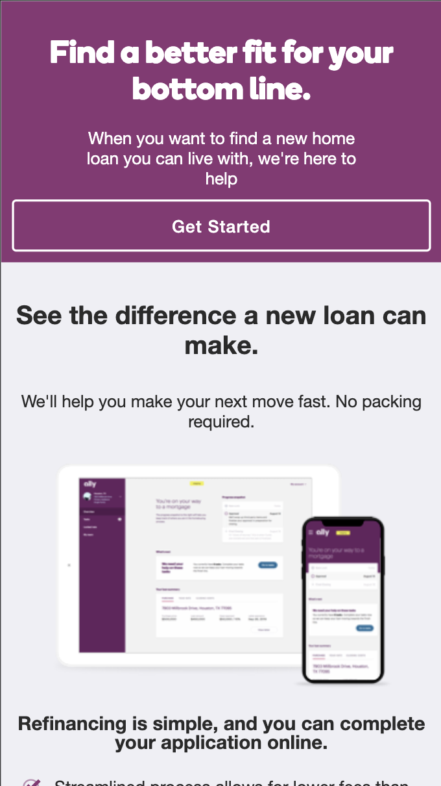
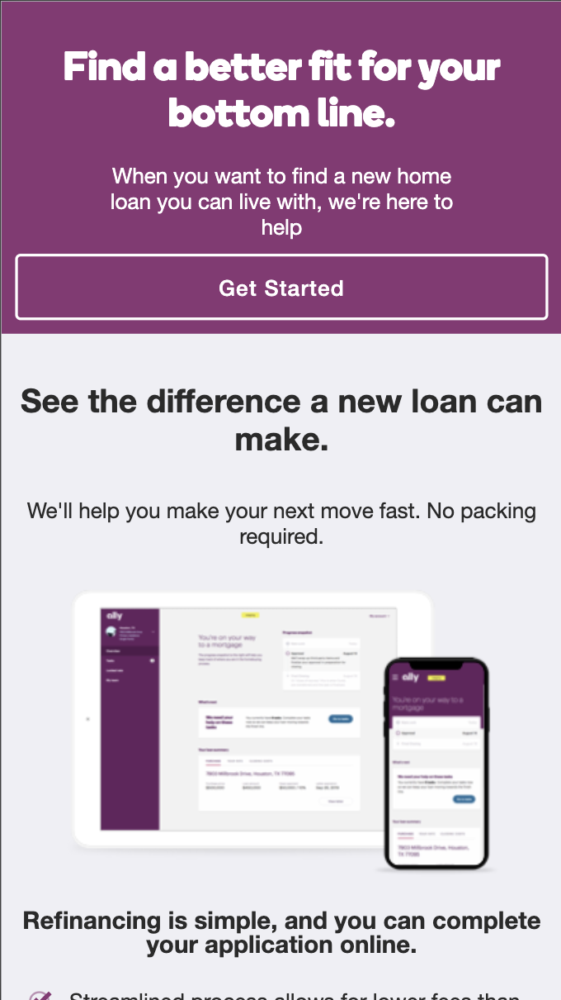

Advocate. Engineer. Writer. Sub par dancer.
Advocate. Engineer. Writer. Sub par dancer.
Player: Jocelyn Smith
XP:
Health:
I build things with other people. Before resigning from Teikametrics I managed people, projects, and programs to deliver large-scale Artificial Intelligence platforms as the Senior Technical Program Manager and Senior Software Engineering Manager of the Artificial Intelligence team.
I have a Bachelors in Creative Writing, a crippling reliance on spellcheck, and a Masters of Science in Computer Science from Northeastern University. I worked on the Usability Design and software engineering for some of the highest traffic pages in North America. I've helped a conversational AI platform understand idioms and multiple user intents, built leaderboards and tournament managment for mobile games, created Large Scale Machine Learning devops pipelines, and worked on a lot (seriously, a lot) of full stack web development projects.
Sometimes I sling JavaScript and Python. I advocate for user-centric design. I build things that enable users regardless of their constraints. And I'd love to produce your game, write your horror story idea, or help you deliver large scale software platforms.


 
